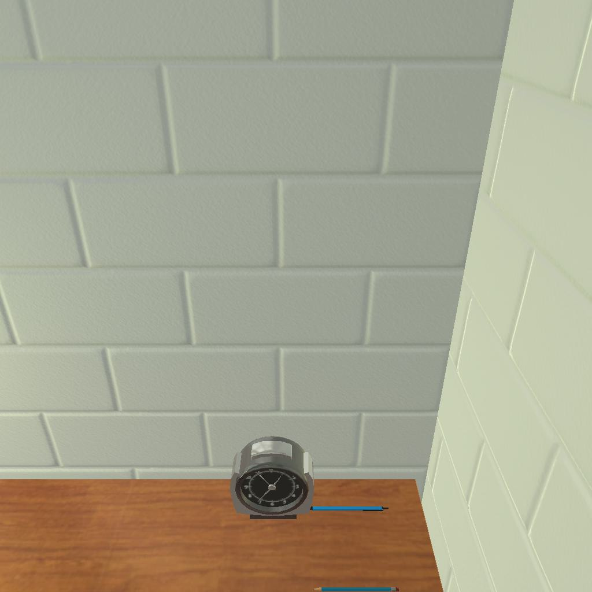

---------------------------------------------------------task: 8---------------------------------------------------------
--------------------------------------------------------------------------------------------------------------------------------------------------------------------
--------------------------------------------------------------------------------------------------------------------------------------------------------------------
Step:--------------------------------------------------------------------------18-------------------------------------------------------------------------------
----------------------------------------
VLM Prompt:
Image1:
**Instruction**
1. Analyze the provided image to identify all visible household objects, focusing on those relevant to the task description "put a laptop in desk."
2. Use the analysis of the image and the task hint "The agent must find an object of the desired type, pick it up, find the correct location to place it, and put it down there." to answer the question: what is the most reasonable action in the choices for the task description "put a laptop in desk"?
4. Decide and write the answer using the template: The answer is: (i): , where i is the real number. If there is no desired object in the image, search every place based on **Initial Observation** to find the object. And if no one is exactly correct, choose a similar answer.
**Initial Observation**
You are in the middle of a room. Looking quickly around you, you can see bed (1), garbagecan (1), desk (1), sidetable (1), drawer (1-5), laundryhamper (1)
**Answer Choices**
(1): go to bed 1
(2): go to garbagecan 1
(3): go to sidetable 1
(4): go to drawer 2
(5): go to laundryhamper 1
(6): go to drawer 3
(7): go to drawer 4
(8): go to drawer 5
(9): take alarmclock 1 from desk 1
(10): take pencil 1 from desk 1
(11): take pen 1 from desk 1
(12): examine desk 1
**Answer**
Let's think step by step by following the instructions.
----------------------------------------
----------------------------------------
Original Response:
The task is to put a laptop in a desk. Based on the image provided, we can see a desk with an alarm clock and some writing utensils on it, but no laptop is visible. Therefore, we need to search for the laptop in the locations mentioned in the initial observation.
Since the task is to place a laptop and not pick up items that are already on the desk, options (9), (10), and (11) are not relevant. Option (12) is to examine the desk, which could be useful to ensure there is space for a laptop, but it does not directly involve finding a laptop. Since the desk is already visible in the image and we know its state, examining it might not be the most immediate action required.
Options (1), (2), (3), and (5) involve going to other furniture items that typically would not store a laptop, especially when the task is to place it in a desk. Therefore, these options are less likely to be the correct action for the task described.
The remaining options are (4), (6), (7), and (8), which involve going to different drawers. Drawers are a more reasonable place to find a laptop in a household setting, especially when it needs to be placed in a desk thereafter.
Since we don't have specific information about which drawer might contain the laptop, we should start with the first drawer and proceed sequentially if the laptop is not found. Therefore, the most reasonable action to start with would be to go to the first drawer mentioned, which is drawer 1.
The answer is: (4): go to drawer 2.
----------------------------------------
----------------------------------------
>>> Refine Original VLM Response and Get Pure Action: go to drawer 2
----------------------------------------
-----------------------------------------------------------------
Running time: 12.31130838394165 seconds
Total Money: 2.2589500000000005
-----------------------------------------------------------------
-----------------------------------------------------------------
Text Observation:You arrive at loc 5. The drawer 2 is closed.
-----------------------------------------------------------------
UNSUCCEED